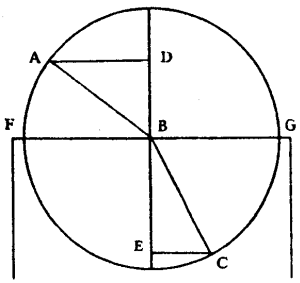
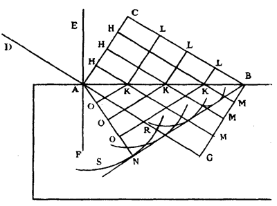
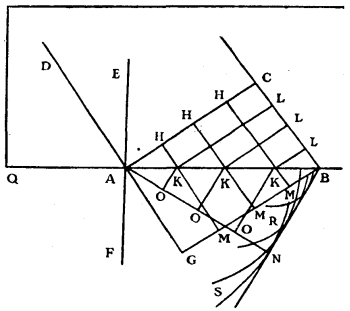
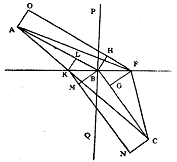

Chapter 6: Chapter III¶
6.1 On Refraction¶
n the same way as the effects of Reflexion have been explained by waves of light reflected at the surface of polished bodies, we will explain transparency and the phenomena of refraction by waves which spread within and across diaphanous bodies, both solids, such as glass, and liquids, such as water, oils, etc. But in order that it may not seem strange to suppose this passage of waves in the interior of these bodies, I will first show that one may conceive it possible in more than one mode.
First, then, if the ethereal matter cannot penetrate transparent bodies at all, their own particles would be able to communicate successively the movement of the waves, the same as do those of the Ether, supposing that, like those, they are of a nature to act as a spring. And this is easy to conceive as regards water and other transparent liquids, they being composed of detached particles. But it may seem more difficult as regards glass and other transparent and hard bodies, because their solidity does not seem to permit them to receive movement except in their whole mass at the same time. This, however, is not necessary because this solidity is not such as it appears to us, it being probable rather that these bodies are composed of particles merely placed close to one another and held together by some pressure from without of some other matter, and by the irregularity of their shapes. For primarily their rarity is shown by the facility with which there passes through them the matter of the vortices of the magnet, and that which causes gravity. Further, one cannot say that these bodies are of a texture similar to that of a sponge or of light bread, because the heat of the fire makes them flow and thereby changes the situation of the particles amongst themselves. It remains then that they are, as has been said, assemblages of particles which touch one another without constituting a continuous solid. This being so, the movement which these particles receive to carry on the waves of light, being merely communicated from some of them to others, without their going for that purpose out of their places or without derangement, it may very well produce its effect without prejudicing in any way the apparent solidity of the compound.
By pressure from without, of which I have spoken, must not be understood that of the air, which would not be sufficient, but that of some other more subtle matter, a pressure which I chanced upon by experiment long ago, namely in the case of water freed from air, which remains suspended in a tube open at its lower end, notwithstanding that the air has been removed from the vessel in which this tube is enclosed.
One can then in this way conceive of transparency in a solid without any necessity that the ethereal matter which serves for light should pass through it, or that it should find pores in which to insinuate itself. But the truth is that this matter not only passes through solids, but does so even with great facility; of which the experiment of Torricelli, above cited, is already a proof. Because on the quicksilver and the water quitting the upper part of the glass tube, it appears that it is immediately filled with ethereal matter, since light passes across it. But here is another argument which proves this ready penetrability, not only in transparent bodies but also in all others.
When light passes across a hollow sphere of glass, closed on all sides, it is certain that it is full of ethereal matter, as much as the spaces outside the sphere. And this ethereal matter, as has been shown above, consists of particles which just touch one another. If then it were enclosed in the sphere in such a way that it could not get out through the pores of the glass, it would be obliged to follow the movement of the sphere when one changes its place: and it would require consequently almost the same force to impress a certain velocity on this sphere, when placed on a horizontal plane, as if it were full of water or perhaps of quicksilver: because every body resists the velocity of the motion which one would give to it, in proportion to the quantity of matter which it contains, and which is obliged to follow this motion. But on the contrary one finds that the sphere resists the impress of movement only in proportion to the quantity of matter of the glass of which it is made. Then it must be that the ethereal matter which is inside is not shut up, but flows through it with very great freedom. We shall demonstrate hereafter that by this process the same penetrability may be inferred also as relating to opaque bodies.
The second mode then of explaining transparency, and one which appears more probably true, is by saying that the waves of light are carried on in the ethereal matter, which continuously occupies the interstices or pores of transparent bodies. For since it passes through them continuously and freely, it follows that they are always full of it. And one may even show that these interstices occupy much more space than the coherent particles which constitute the bodies. For if what we have just said is true: that force is required to impress a certain horizontal velocity on bodies in proportion as they contain coherent matter; and if the proportion of this force follows the law of weights, as is confirmed by experiment, then the quantity of the constituent matter of bodies also follows the proportion of their weights. Now we see that water weighs only one fourteenth part as much as an equal portion of quicksilver: therefore the matter of the water does not occupy the fourteenth part of the space which its mass obtains. It must even occupy much less of it, since quicksilver is less heavy than gold, and the matter of gold is by no means dense, as follows from the fact that the matter of the vortices of the magnet and of that which is the cause of gravity pass very freely through it.
But it may be objected here that if water is a body of so great rarity, and if its particles occupy so small a portion of the space of its apparent bulk, it is very strange how it yet resists Compression so strongly without permitting itself to be condensed by any force which one has hitherto essayed to employ, preserving even its entire liquidity while subjected to this pressure.
This is no small difficulty. It may, however, be resolved by saying that the very violent and rapid motion of the subtle matter which renders water liquid, by agitating the particles of which it is composed, maintains this liquidity in spite of the pressure which hitherto any one has been minded to apply to it.
The rarity of transparent bodies being then such as we have said, one easily conceives that the waves might be carried on in the ethereal matter which fills the interstices of the particles. And, moreover, one may believe that the progression of these waves ought to be a little slower in the interior of bodies, by reason of the small detours which the same particles cause. In which different velocity of light I shall show the cause of refraction to consist.
Before doing so, I will indicate the third and last mode in which transparency may be conceived; which is by supposing that the movement of the waves of light is transmitted indifferently both in the particles of the ethereal matter which occupy the interstices of bodies, and in the particles which compose them, so that the movement passes from one to the other. And it will be seen hereafter that this hypothesis serves excellently to explain the double refraction of certain transparent bodies.
Should it be objected that if the particles of the ether are smaller than those of transparent bodies (since they pass through their intervals), it would follow that they can communicate to them but little of their movement, it may be replied that the particles of these bodies are in turn composed of still smaller particles, and so it will be these secondary particles which will receive the movement from those of the ether.
Furthermore, if the particles of transparent bodies have a recoil a little less prompt than that of the ethereal particles, which nothing hinders us from supposing, it will again follow that the progression of the waves of light will be slower in the interior of such bodies than it is outside in the ethereal matter.
All this I have found as most probable for the mode in which the waves of light pass across transparent bodies. To which it must further be added in what respect these bodies differ from those which are opaque; and the more so since it might seem because of the easy penetration of bodies by the ethereal matter, of which mention has been made, that there would not be any body that was not transparent. For by the same reasoning about the hollow sphere which I have employed to prove the smallness of the density of glass and its easy penetrability by the ethereal matter, one might also prove that the same penetrability obtains for metals and for every other sort of body. For this sphere being for example of silver, it is certain that it contains some of the ethereal matter which serves for light, since this was there as well as in the air when the opening of the sphere was closed. Yet, being closed and placed upon a horizontal plane, it resists the movement which one wishes to give to it, merely according to the quantity of silver of which it is made; so that one must conclude, as above, that the ethereal matter which is enclosed does not follow the movement of the sphere; and that therefore silver, as well as glass, is very easily penetrated by this matter. Some of it is therefore present continuously and in quantities between the particles of silver and of all other opaque bodies: and since it serves for the propagation of light it would seem that these bodies ought also to be transparent, which however is not the case.
Whence then, one will say, does their opacity come? Is it because the particles which compose them are soft; that is to say, these particles being composed of others that are smaller, are they capable of changing their figure on receiving the pressure of the ethereal particles, the motion of which they thereby damp, and so hinder the continuance of the waves of light? That cannot be: for if the particles of the metals are soft, how is it that polished silver and mercury reflect light so strongly? What I find to be most probable herein, is to say that metallic bodies, which are almost the only really opaque ones, have mixed amongst their hard particles some soft ones; so that some serve to cause reflexion and the others to hinder transparency; while, on the other hand, transparent bodies contain only hard particles which have the faculty of recoil, and serve together with those of the ethereal matter for the propagation of the waves of light, as has been said.

Let us pass now to the explanation of the effects of Refraction, assuming, as we have done, the passage of waves of light through transparent bodies, and the diminution of velocity which these same waves suffer in them.
The chief property of Refraction is that a ray of light, such as AB, being in the air, and falling obliquely upon the polished surface of a transparent body, such as FG, is broken at the point of incidence B, in such a way that with the straight line DBE which cuts the surface perpendicularly it makes an angle CBE less than ABD which it made with the same perpendicular when in the air. And the measure of these angles is found by describing, about the point B, a circle which cuts the radii AB, BC. For the perpendiculars AD, CE, let fall from the points of intersection upon the straight line DE, which are called the Sines of the angles ABD, CBE, have a certain ratio between themselves; which ratio is always the same for all inclinations of the incident ray, at least for a given transparent body. This ratio is, in glass, very nearly as 3 to 2; and in water very nearly as 4 to 3; and is likewise different in other diaphanous bodies.
Another property, similar to this, is that the refractions are reciprocal between the rays entering into a transparent body and those which are leaving it. That is to say that if the ray AB in entering the transparent body is refracted into BC, then likewise CB being taken as a ray in the interior of this body will be refracted, on passing out, into BA.

To explain then the reasons of these phenomena according to our principles, let AB be the straight line which represents a plane surface bounding the transparent substances which lie towards C and towards N. When I say plane, that does not signify a perfect evenness, but such as has been understood in treating of reflexion, and for the same reason. Let the line AC represent a portion of a wave of light, the centre of which is supposed so distant that this portion may be considered as a straight line. The piece C, then, of the wave AC, will in a certain space of time have advanced as far as the plane AB following the straight line CB, which may be imagined as coming from the luminous centre, and which consequently will cut AC at right angles. Now in the same time the piece A would have come to G along the straight line AG, equal and parallel to CB; and all the portion of wave AC would be at GB if the matter of the transparent body transmitted the movement of the wave as quickly as the matter of the Ether. But let us suppose that it transmits this movement less quickly, by one-third, for instance. Movement will then be spread from the point A, in the matter of the transparent body through a distance equal to two-thirds of CB, making its own particular spherical wave according to what has been said before. This wave is then represented by the circumference SNR, the centre of which is A, and its semi-diameter equal to two-thirds of CB. Then if one considers in order the other pieces H of the wave AC, it appears that in the same time that the piece C reaches B they will not only have arrived at the surface AB along the straight lines HK parallel to CB, but that, in addition, they will have generated in the diaphanous substance from the centres K, partial waves, represented here by circumferences the semi-diameters of which are equal to two-thirds of the lines KM, that is to say, to two-thirds of the prolongations of HK down to the straight line BG; for these semi-diameters would have been equal to entire lengths of KM if the two transparent substances had been of the same penetrability.
Now all these circumferences have for a common tangent the straight line BN; namely the same line which is drawn as a tangent from the point B to the circumference SNR which we considered first. For it is easy to see that all the other circumferences will touch the same BN, from B up to the point of contact N, which is the same point where AN falls perpendicularly on BN.
It is then BN, which is formed by small arcs of these circumferences, which terminates the movement that the wave AC has communicated within the transparent body, and where this movement occurs in much greater amount than anywhere else. And for that reason this line, in accordance with what has been said more than once, is the propagation of the wave AC at the moment when its piece C has reached B. For there is no other line below the plane AB which is, like BN, a common tangent to all these partial waves. And if one would know how the wave AC has come progressively to BN, it is necessary only to draw in the same figure the straight lines KO parallel to BN, and all the lines KL parallel to AC. Thus one will see that the wave CA, from being a straight line, has become broken in all the positions LKO successively, and that it has again become a straight line at BN. This being evident by what has already been demonstrated, there is no need to explain it further.
Now, in the same figure, if one draws EAF, which cuts the plane AB at right angles at the point A, since AD is perpendicular to the wave AC, it will be DA which will mark the ray of incident light, and AN which was perpendicular to BN, the refracted ray: since the rays are nothing else than the straight lines along which the portions of the waves advance.
Whence it is easy to recognize this chief property of refraction, namely that the Sine of the angle DAE has always the same ratio to the Sine of the angle NAF, whatever be the inclination of the ray DA: and that this ratio is the same as that of the velocity of the waves in the transparent substance which is towards AE to their velocity in the transparent substance towards AF. For, considering AB as the radius of a circle, the Sine of the angle BAC is BC, and the Sine of the angle ABN is AN. But the angle BAC is equal to DAE, since each of them added to CAE makes a right angle. And the angle ABN is equal to NAF, since each of them with BAN makes a right angle. Then also the Sine of the angle DAE is to the Sine of NAF as BC is to AN. But the ratio of BC to AN was the same as that of the velocities of light in the substance which is towards AE and in that which is towards AF; therefore also the Sine of the angle DAE will be to the Sine of the angle NAF the same as the said velocities of light.
To see, consequently, what the refraction will be when the waves of light pass into a substance in which the movement travels more quickly than in that from which they emerge (let us again assume the ratio of 3 to 2), it is only necessary to repeat all the same construction and demonstration which we have just used, merely substituting everywhere 3/2 instead of 2/3. And it will be found by the same reasoning, in this other figure, that when the piece C of the wave AC shall have reached the surface AB at B, all the portions of the wave AC will have advanced as far as BN, so that BC the perpendicular on AC is to AN the perpendicular on BN as 2 to 3. And there will finally be this same ratio of 2 to 3 between the Sine of the angle BAD and the Sine of the angle FAN.
Hence one sees the reciprocal relation of the refractions of the ray on entering and on leaving one and the same transparent body: namely that if NA falling on the external surface AB is refracted into the direction AD, so the ray AD will be refracted on leaving the transparent body into the direction AN.

One sees also the reason for a noteworthy accident which happens in this refraction: which is this, that after a certain obliquity of the incident ray DA, it begins to be quite unable to penetrate into the other transparent substance. For if the angle DAQ or CBA is such that in the triangle ACB, CB is equal to 2/3 of AB, or is greater, then AN cannot form one side of the triangle ANB, since it becomes equal to or greater than AB: so that the portion of wave BN cannot be found anywhere, neither consequently can AN, which ought to be perpendicular to it. And thus the incident ray DA does not then pierce the surface AB.
When the ratio of the velocities of the waves is as two to three, as in our example, which is that which obtains for glass and air, the angle DAQ must be more than 48 degrees 11 minutes in order that the ray DA may be able to pass by refraction. And when the ratio of the velocities is as 3 to 4, as it is very nearly in water and air, this angle DAQ must exceed 41 degrees 24 minutes. And this accords perfectly with experiment.
But it might here be asked: since the meeting of the wave AC against the surface AB ought to produce movement in the matter which is on the other side, why does no light pass there? To which the reply is easy if one remembers what has been said before. For although it generates an infinitude of partial waves in the matter which is at the other side of AB, these waves never have a common tangent line (either straight or curved) at the same moment; and so there is no line terminating the propagation of the wave AC beyond the plane AB, nor any place where the movement is gathered together in sufficiently great quantity to produce light. And one will easily see the truth of this, namely that CB being larger than 2/3 of AB, the waves excited beyond the plane AB will have no common tangent if about the centres K one then draws circles having radii equal to 3/2 of the lengths LB to which they correspond. For all these circles will be enclosed in one another and will all pass beyond the point B.
Now it is to be remarked that from the moment when the angle DAQ is smaller than is requisite to permit the refracted ray DA to pass into the other transparent substance, one finds that the interior reflexion which occurs at the surface AB is much augmented in brightness, as is easy to realize by experiment with a triangular prism; and for this our theory can afford this reason. When the angle DAQ is still large enough to enable the ray DA to pass, it is evident that the light from the portion AC of the wave is collected in a minimum space when it reaches BN. It appears also that the wave BN becomes so much the smaller as the angle CBA or DAQ is made less; until when the latter is diminished to the limit indicated a little previously, this wave BN is collected together always at one point. That is to say, that when the piece C of the wave AC has then arrived at B, the wave BN which is the propagation of AC is entirely reduced to the same point B. Similarly when the piece H has reached K, the part AH is entirely reduced to the same point K. This makes it evident that in proportion as the wave CA comes to meet the surface AB, there occurs a great quantity of movement along that surface; which movement ought also to spread within the transparent body and ought to have much re-enforced the partial waves which produce the interior reflexion against the surface AB, according to the laws of reflexion previously explained.
And because a slight diminution of the angle of incidence DAQ causes the wave BN, however great it was, to be reduced to zero, (for this angle being 49 degrees 11 minutes in the glass, the angle BAN is still 11 degrees 21 minutes, and the same angle being reduced by one degree only the angle BAN is reduced to zero, and so the wave BN reduced to a point) thence it comes about that the interior reflexion from being obscure becomes suddenly bright, so soon as the angle of incidence is such that it no longer gives passage to the refraction.
Now as concerns ordinary external reflexion, that is to say which occurs when the angle of incidence DAQ is still large enough to enable the refracted ray to penetrate beyond the surface AB, this reflexion should occur against the particles of the substance which touches the transparent body on its outside. And it apparently occurs against the particles of the air or others mingled with the ethereal particles and larger than they. So on the other hand the external reflexion of these bodies occurs against the particles which compose them, and which are also larger than those of the ethereal matter, since the latter flows in their interstices. It is true that there remains here some difficulty in those experiments in which this interior reflexion occurs without the particles of air being able to contribute to it, as in vessels or tubes from which the air has been extracted.
Experience, moreover, teaches us that these two reflexions are of nearly equal force, and that in different transparent bodies they are so much the stronger as the refraction of these bodies is the greater. Thus one sees manifestly that the reflexion of glass is stronger than that of water, and that of diamond stronger than that of glass.
I will finish this theory of refraction by demonstrating a remarkable proposition which depends on it; namely, that a ray of light in order to go from one point to another, when these points are in different media, is refracted in such wise at the plane surface which joins these two media that it employs the least possible time: and exactly the same happens in the case of reflexion against a plane surface. Mr. Fermat was the first to propound this property of refraction, holding with us, and directly counter to the opinion of Mr. Des Cartes, that light passes more slowly through glass and water than through air. But he assumed besides this a constant ratio of Sines, which we have just proved by these different degrees of velocity alone: or rather, what is equivalent, he assumed not only that the velocities were different but that the light took the least time possible for its passage, and thence deduced the constant ratio of the Sines. His demonstration, which may be seen in his printed works, and in the volume of letters of Mr. Des Cartes, is very long; wherefore I give here another which is simpler and easier.

Let KF be the plane surface; A the point in the medium which the light traverses more easily, as the air; C the point in the other which is more difficult to penetrate, as water. And suppose that a ray has come from A, by B, to C, having been refracted at B according to the law demonstrated a little before; that is to say that, having drawn PBQ, which cuts the plane at right angles, let the sine of the angle ABP have to the sine of the angle CBQ the same ratio as the velocity of light in the medium where A is to the velocity of light in the medium where C is. It is to be shown that the time of passage of light along AB and BC taken together, is the shortest that can be. Let us assume that it may have come by other lines, and, in the first place, along AF, FC, so that the point of refraction F may be further from B than the point A; and let AO be a line perpendicular to AB, and FO parallel to AB; BH perpendicular to FO, and FG to BC.
Since then the angle HBF is equal to PBA, and the angle BFG equal to QBC, it follows that the sine of the angle HBF will also have the same ratio to the sine of BFG, as the velocity of light in the medium A is to its velocity in the medium C. But these sines are the straight lines HF, BG, if we take BF as the semi-diameter of a circle. Then these lines HF, BG, will bear to one another the said ratio of the velocities. And, therefore, the time of the light along HF, supposing that the ray had been OF, would be equal to the time along BG in the interior of the medium C. But the time along AB is equal to the time along OH; therefore the time along OF is equal to the time along AB, BG. Again the time along FC is greater than that along GC; then the time along OFC will be longer than that along ABC. But AF is longer than OF, then the time along AFC will by just so much more exceed the time along ABC.
Now let us assume that the ray has come from A to C along AK, KC; the point of refraction K being nearer to A than the point B is; and let CN be the perpendicular upon BC, KN parallel to BC: BM perpendicular upon KN, and KL upon BA.
Here BL and KM are the sines of angles BKL, KBM; that is to say, of the angles PBA, QBC; and therefore they are to one another as the velocity of light in the medium A is to the velocity in the medium C. Then the time along LB is equal to the time along KM; and since the time along BC is equal to the time along MN, the time along LBC will be equal to the time along KMN. But the time along AK is longer than that along AL: hence the time along AKN is longer than that along ABC. And KC being longer than KN, the time along AKC will exceed, by as much more, the time along ABC. Hence it appears that the time along ABC is the shortest possible; which was to be proven.